Freelance
De 2011 a 2018 trabajé como freelance, creando sitios web basados en WordPress y otros CMS, desarrollando tiendas online y colaborando en proyectos de diseño gráfico, branding e incluso visitas virtuales con fotografía panorámica. Fue una etapa de creatividad y versatilidad, trabajando mano a mano con pequeñas empresas y emprendedores.
Telefónica
Durante diez años formé parte de Telefónica Soluciones (2000–2010), donde me especialicé en UX, UI, accesibilidad y maquetación web en proyectos de gran envergadura. Los dos últimos años los dediqué a la jefatura de proyectos de formación, coordinando equipos y asegurando calidad y consistencia en cada entrega.
Store
Este edificio está dedicado a mis proyectos personales:
- Ilustraciones y diseños para camisetas.
- La serie “A hombros de gigantas”, una iniciativa de divulgación y reconocimiento.
Mi espacio donde la creatividad y la tecnología se encuentran para dar forma a nuevas ideas.
Formación continua
A lo largo de mi carrera he apostado por la formación continua, tanto como estudiante como formador. Desde la Universidad de Alcalá, donde me especialicé en accesibilidad y UX, hasta cursos y talleres en diseño, desarrollo y creatividad digital. Mi filosofía: aprender para compartir.
Mi viaje
Soy Emilio Rodríguez, diseñador web y especialista en UX, accesibilidad y diseño visual, con más de 20 años de experiencia. Me apasiona el diseño centrado en las personas, la tecnología creativa y la innovación digital.
Este viaje, como el globo, sigue en ascenso: siempre explorando nuevas ideas y horizontes.
Edificio OSOCO
Entre 2018 y 2025 formé parte de OSOCO, una empresa de desarrollo de software donde reforcé mi perfil como experto en diseño, UX, accesibilidad y maquetación. Allí colaboré estrechamente con equipos técnicos y creativos en proyectos de alto impacto, aplicando metodologías ágiles y un fuerte enfoque en la experiencia de usuario.